Префектура Ямагата · Ямагата · еда
Il Cotechino в Ямагате: итальянский ресторан, где весь ужин начинается с ветчины
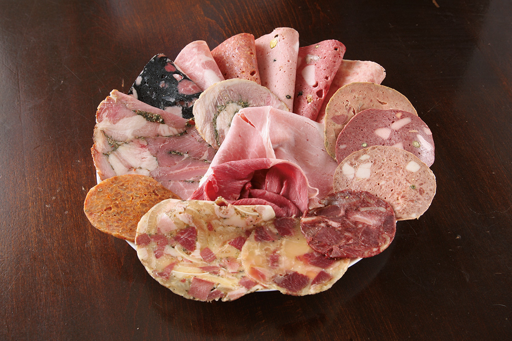
Хороший ресторан находят даже в маленьком городе и в неудобном месте. Il Cotechino в Ямагате делает итальянские ветчины и колбасы сам, и о нём рассказывают друг другу повара и сомелье Токио.
Ресторан
Ехать в Ямагату ради ветчины
Котекино это колбаса из итальянской Модены. Раз ресторан назван в её честь, понятно, что здесь главное мясо. О нём ресторанный критик, автор исходного материала, слышала от шефов и сомелье итальянских ресторанов Токио. И всё же ехать в Ямагату ради ветчины и колбас казалось ей странной идеей, пока она не узнала, что известный токийский шеф отправил сюда своих сотрудников на стажировку.
Il Cotechino в год расходует около четырёх тонн свинины. Шеф Томоюки Сатакэ невысокого роста, а взгляд у него цепкий, как у настоящего мастера. На вопрос, как делить итальянские ветчины и колбасы, он отвечает коротко: на варёные и неварёные. Потом открывает холодильные витрины и кладовую, и на столе быстро вырастает гора мясных батонов и окороков. Каждый он режет отдельно, ломтик за ломтиком, и выкладывает на блюдо. Получается настоящий букет из ветчины, и у каждого ломтика свой вкус.
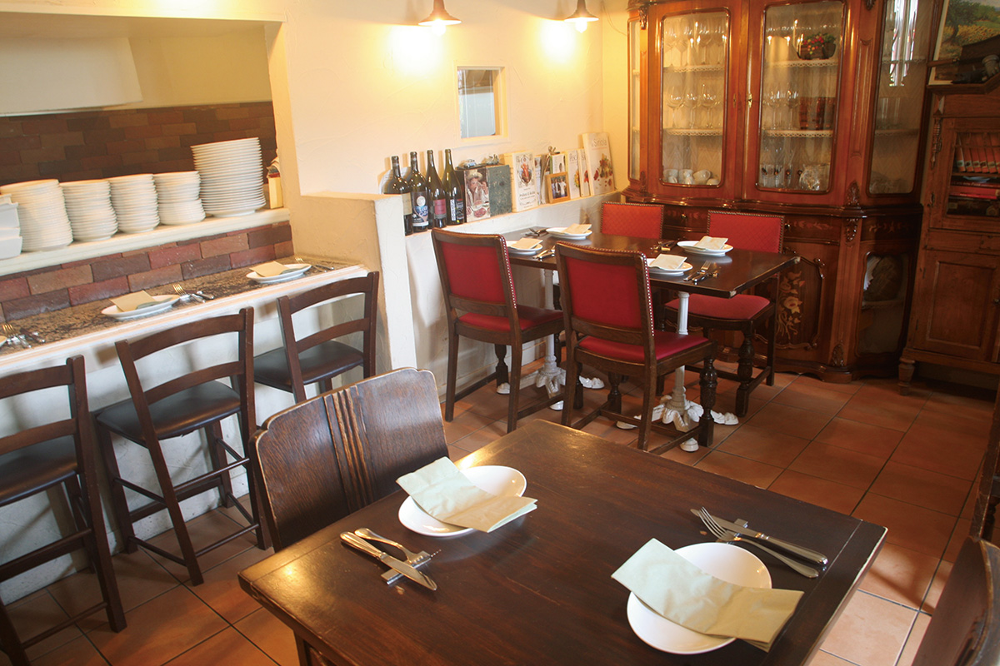
Мясо
Два типа: варёные и сыровяленые
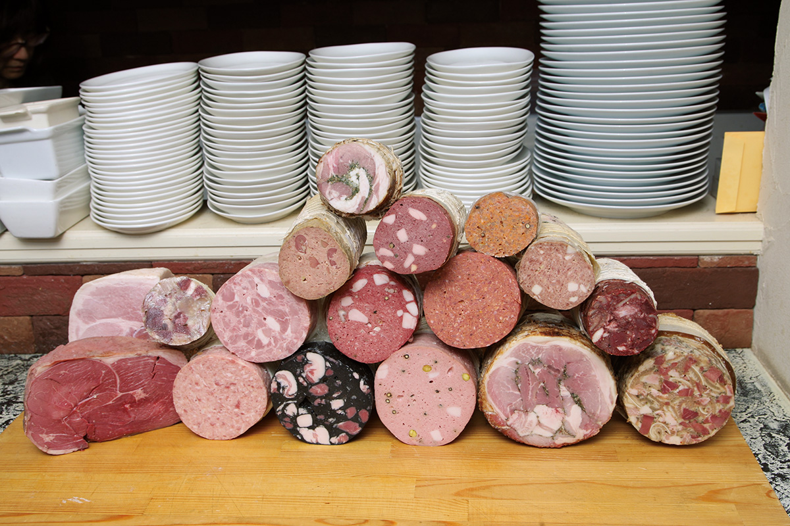
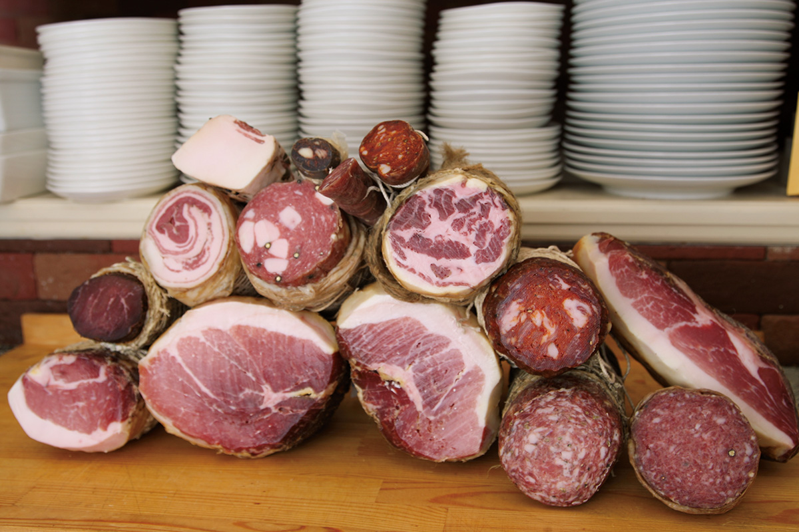
Варёные изделия готовят на пару, собирают из разных частей туши в желе или делают на основе печени. Их можно сделать сразу много, и готовы они быстро. Сыровяленые требуют времени: мясо вялят, выдерживают, солят и коптят, зато у них яркий аромат и особая текстура.
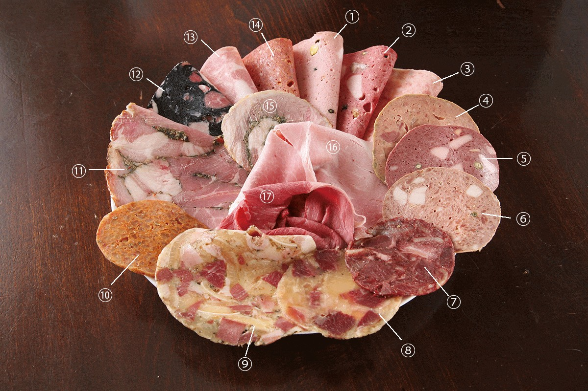
- Мортаделла из Болоньи: свиной фарш с жиром с шеи, приготовленный на пару.
- Мортаделла на свиной крови с грецкими орехами и кардамоном.
- Большая колбаса из куриной грудки с пармиджано.
- Колбаса из куриной печени с конфи из печени.
- Колбаса из говяжьей печени и свиной крови с кардамоном.
- Колбаса из свиной печени со вкусом какао.
- Бристо: студень из свежей свиной крови и сердца.
- Говяжьи щёки и ахиллово сухожилие по-мясницки.
- Коппа ди теста, колбаса из желатиновых частей свиной головы, её делают по всей Италии.
- Холодная котекино с перцем чили.
- Поркетта, блюдо Лацио и Умбрии: свинина в соли и травах, свёрнутая рулетом и запечённая.
- Мортаделла с чернилами каракатицы, авторская версия шефа для японских гостей.
- Прессованная ветчина из свиного окорока.
- Большая баранья колбаса по-арабски.
- Баранина в духе поркетты: лопатка и шейная часть, запечённые с травами.
- Прошутто котто, варёный свиной окорок.
- Прошутто котто из бараньей ноги.
Тарелка
Гордость шефа: домашнее ассорти
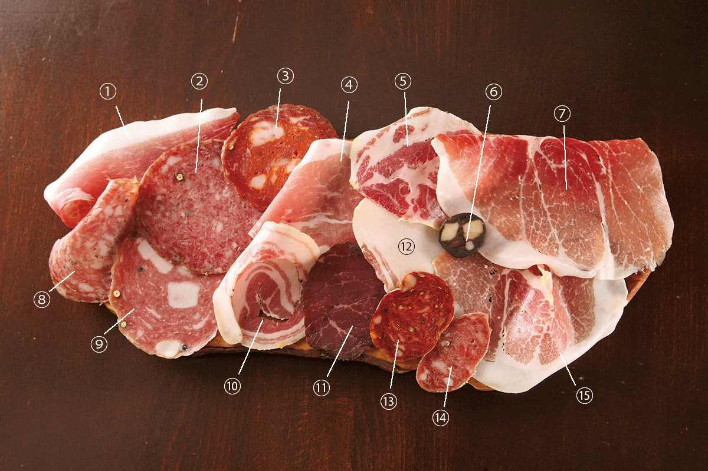
- Спек, копчёный сыровяленый окорок с севера Италии, его выдерживают не меньше 22 недель.
- Салями миланезе, классическая салями с говядиной.
- Вентричина: салями с сыровяленой свиной диафрагмой, гордость Абруццо.
- Фьокко, сыровяленая ветчина из наружной части окорока.
- Капоколло из свиной шейки в оболочке, его делают по всей Италии и ценят за аромат жира.
- Салями из свиной печени с пятью специями.
- Кулатта: та же часть туши, что у кулателло, но без пузыря.
- Финоккьона, тосканская классика из фарша среднего помола с семенами фенхеля и другими специями.
- Салями-мортаделла с крупными кусками спинного сала внутри.
- Панчетта арротолата, солёная свиная грудинка рулетом.
- Брезаола, сыровяленая говядина из окорока. Самая известная делается в долине Вальтеллина в Ломбардии: в ней мало жира и много вкуса.
- Лардо, спинное сало, натёртое солью и специями и высушенное.
- Салямино с перцем чили.
- Салямино с чесноком и перцем.
- Кулателло из самой мягкой, мраморной части окорока, лучшая из сыровяленых ветчин.
На этих фото собрано как можно больше видов сразу. Обычно в составе курса на закуску приносят по 2–3 вида на тарелке на каждого гостя: три-четыре тарелки варёных и столько же сыровяленых. Всего около 15 видов на человека. Формально это закуска, но ею вполне можно наесться.
Шеф
«Наш ресторан для профессионалов»
В Японии запрет на мясо сняли только в эпоху Мэйдзи, и многому в нём японцы до сих пор учатся у Европы. Ветчины и колбасы при этом отдельная мясная культура, не похожая на ресторанную кухню. Сатакэ открыл её для себя за годы в Италии.
«Когда я работал в Парме, городе прошутто, к нам пришёл помогать мастер из колбасного цеха и показал, как готовить фарш. С этого всё началось. Потом посудомойщица из ресторана с тремя звёздами позвала меня к себе домой посмотреть, как семья забивает свинью»
шеф Томоюки Сатакэ
В таких семьях идут в дело кровь, голова и шкура, а всё сделанное съедают за год: так повелось ещё с тех времён, когда не было холодильников. Для себя лишних добавок не кладут, и натуральный вкус этого мяса поразил шефа. Вернувшись домой, он решил строить ресторан на ветчинах и колбасах: климат Ямагаты похож на климат Северной Италии. Другого такого ресторана в городе не было. Это было и преимуществом, и риском, ведь никто не знал, как отнесутся гости. Поэтому Сатакэ сделал курс на выбор шефа.
«Когда приношу первую тарелку, все ахают. К четвёртой замолкают. На пятой спрашивают: а когда ветчина закончится? Однажды мне даже возмущённо сказали, что это не кухня. Со стороны кажется, будто я только и делаю, что режу ветчину на слайсере»
шеф Томоюки Сатакэ
На деле кухня начинается намного раньше, с засолки и набивки. А сыровяленую ветчину от засолки до готовности выдерживают очень долго. «Я знаю, что съесть всё трудно. Но наш ресторан для профессионалов», говорит шеф.
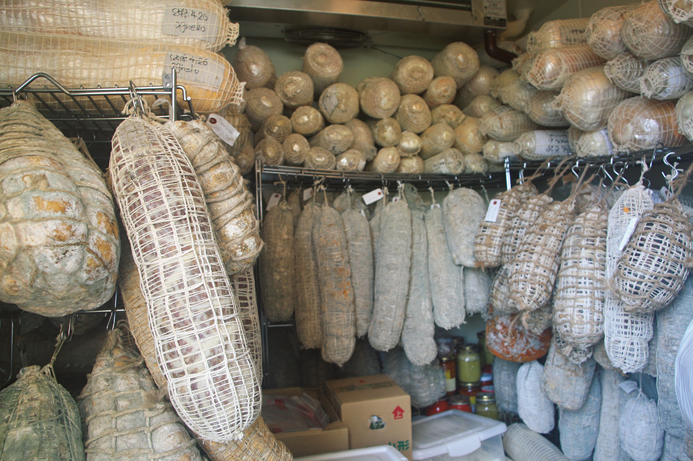
Сатакэ стремится подать лучшую ветчину и колбасу именно в этот день и в эту минуту, и последний штрих здесь нарезка. Сыровяленую ветчину режут толщиной 0,2 мм, чтобы почувствовать её мягкость. «С момента нарезки начинается окисление. Когда тарелка на столе, ешьте сразу», просит шеф. Почти как с нигири-суши. Кулателло, вершина сыровяленых ветчин, тает во рту и раскрывает сладкий аромат, и критик удивляется, что такую изысканную ветчину делают в Японии.
Соли шеф кладёт меньше, чтобы раскрыть вкус свинины. «Обычно в салями 2,8% соли, у нас 2,4%. В сыровяленой ветчине обычно 2,4%, у нас 2,2%». Эта маленькая разница сильно меняет впечатление. Ресторан, о котором когда-то говорили «это не кухня», признали лишь спустя несколько лет: из Токио стали приезжать шефы и виноделы, и постоянных гостей резко прибавилось. Шеф советует приезжать за ветчиной осенью: к этому времени созревают изделия, которыми он особенно доволен.
Меню
Что заказать кроме ассорти
Курс на выбор шефа за 4000 иен включает багна кауду, колбасы и салями, студни, сыровяленые ветчины, всего 14–15 видов, а к ним пасту или горячее и десерт. В курсе за 4500 иен есть и паста, и горячее (цены 2021 года). Можно заказывать и по меню.
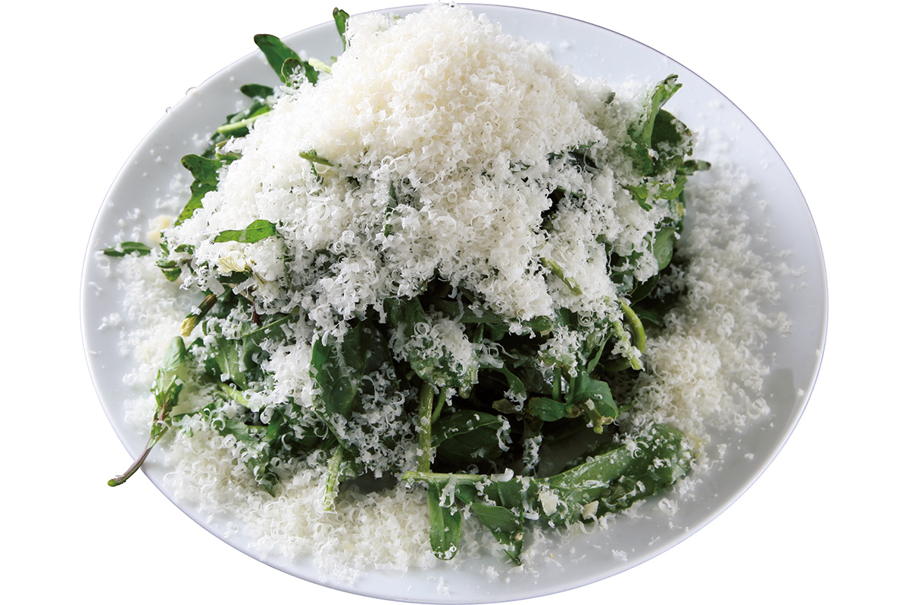
Между мясными тарелками этот салат хорошо освежает. Зелёную спаржу, которая к началу лета становится толстой, подают целиком, с яйцом пашот, соусом-пеной и хрустящими сырными пластинками (1600 иен в 2021 году). Домашние пикули маринуют с небольшим количеством уксуса, чтобы чувствовался вкус овощей, и их можно есть сколько угодно (1100 иен в 2021 году).
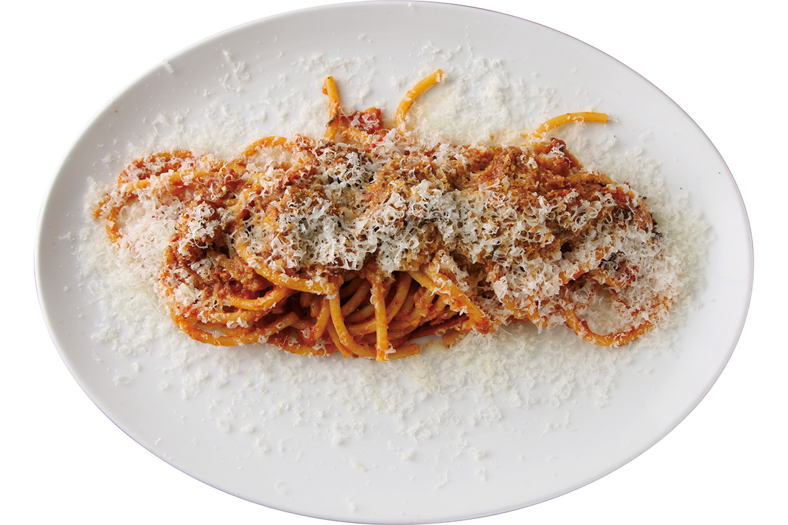
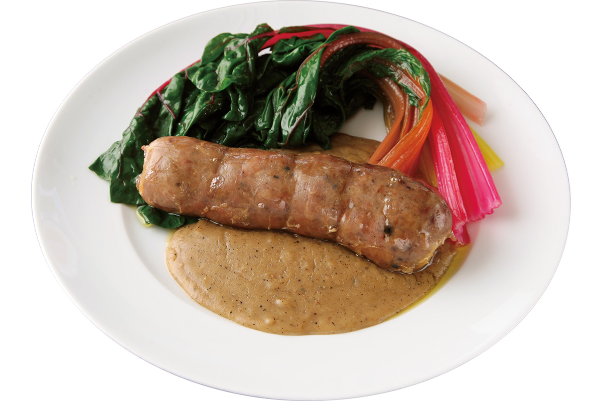
Гуанчале, свиную щёку в соли, здесь выдерживают три недели и кладут в пасты вроде аматричаны и карбонары. Котекино, колбасу, давшую имя ресторану, в Италии едят на Новый год; здесь её подают с сальсой пеарой, соусом из хлеба с большим количеством чёрного перца.
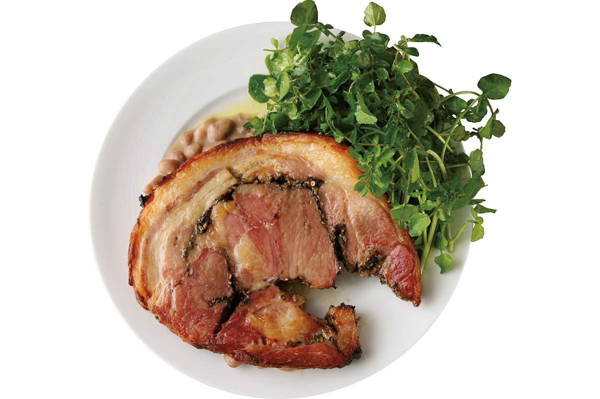
Для поркетты не жалеют трав: розмарин, шалфей, семена фенхеля, мята, орегано. Вина в основном натуральные, бокал от 600 иен (2021 год). Стоит попробовать ламбруско, красное слегка игристое, и барберу.
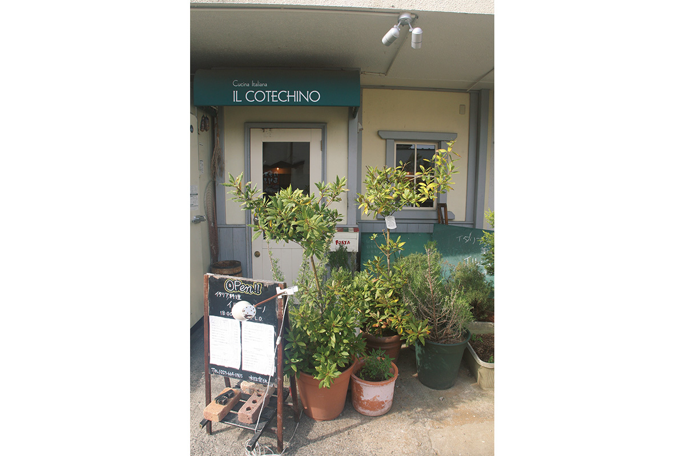
Il Cotechino
- Адрес
- префектура Ямагата, Ямагата, Акоя-мати, 2-1-28
- Телефон
- +81 23-664-0765
- Часы работы
- 18:00–22:30 (последний заказ 21:30)
- Выходные
- среда (если это праздник, ресторан открыт, а выходной на следующий день)
- Цены / Вход
- курс на выбор шефа 4000 иен без налога (багна кауда, около 15 видов ветчин и колбас, паста или горячее), с 18:00 до 20:00 только курс; можно заказывать по меню; состав курса меняется по сезону
- Сайт
- ilcotechino.com
Фото: Мунэаки Маэда.